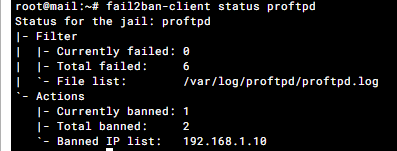

1ère étape : Installation du serveur
Le serveur fail2ban va nous permettre de bannir temporairement les IP qui tentent dès connexion qui échoue trop souvent sur nos différents serveurs.
Pour cela, on commence par installer fail2ban avec les commandes :
Ouvrir un navigateur et accéder à l’interface via l’adresse :
apt update
apt install fail2ban
2ème étape : Modification du fichier de configuration
Tout d’abord, on créer une copie du fichier de configuration original /etc/fail2ban/jail.conf
Ensuite, dans le fichier qu’on vient de copier, on modifie les paramètres par défaut afin de changer les conditions de bannissement des IP. Pour cela, on modifie trois lignes :
- Bantime = 2m
- Findtime = 10m
- Maxretry = 3
C’est à dire qu’une Ip peut tenter de se connecter trois fois avant de ce faire bannier 2minutes. Cependant les trois tentatives doivent se faire en 10min pour ce faire bannir.
Ensuite, on a juste à redémarrer le service avec la commande :
systemctl restart fail2ban
Ensuite, lorsqu’un autre PC loupe trois tentative, il ne peut plus se connecter et on peut voir avec la commande :
fail2ban-client status proftpd
On peut voir quelle ip c’est fait ban
